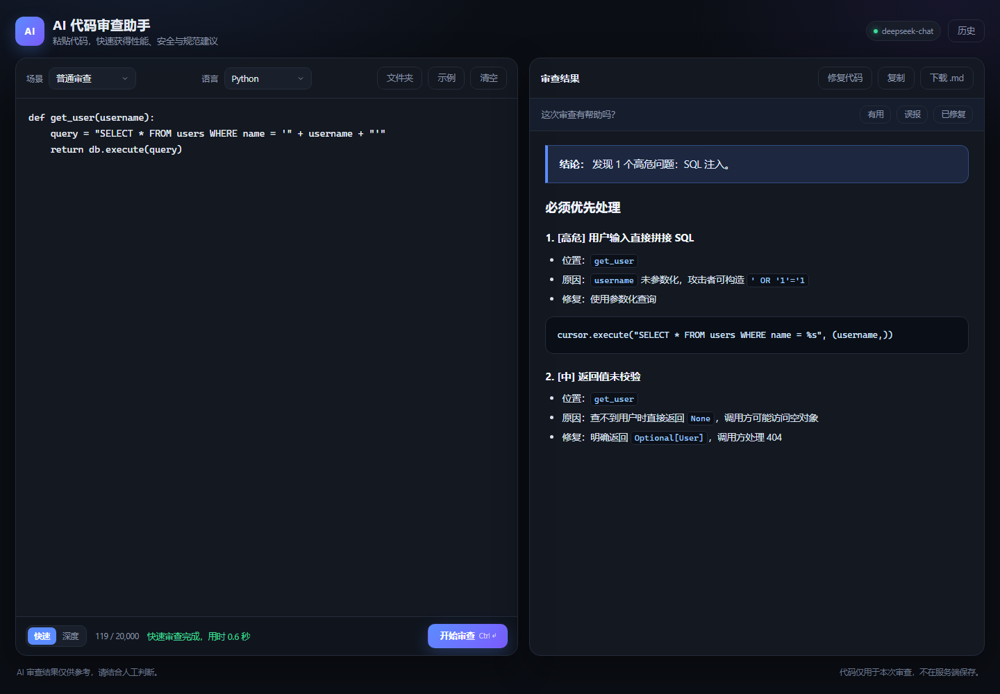
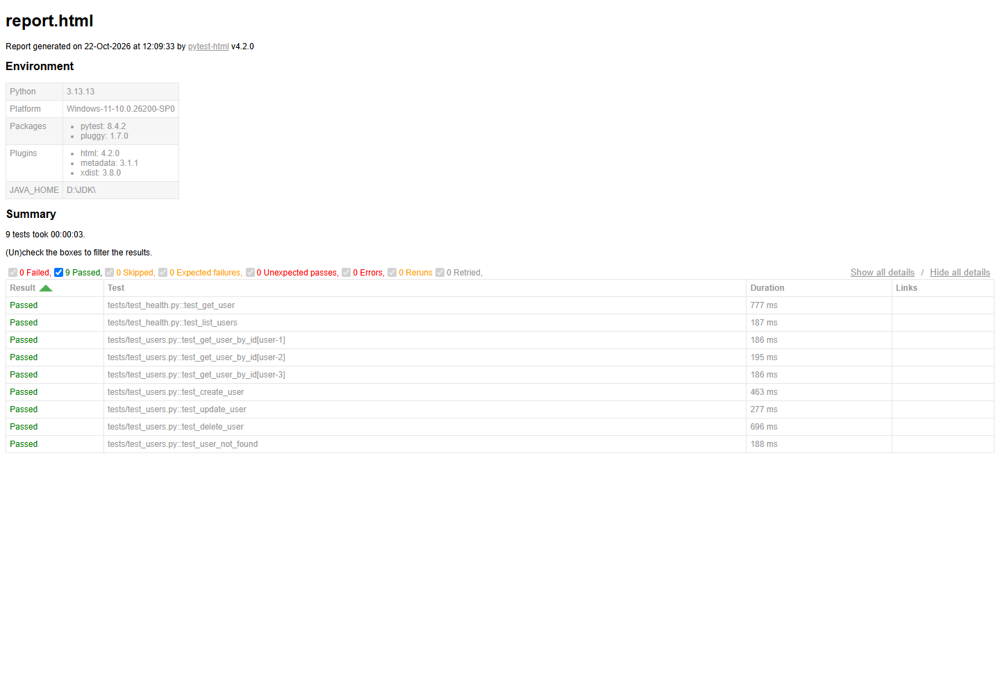

AI 代码审查助手
FASTAPI · SSE · SQLITE · DOCKER面向个人开发者和小团队的 AI 代码审查服务。支持快速 / 深度 / 修复三种模式， 以及编程题评测、自动化测试脚本审查和 zip 文件夹分析。
- SSE 流式输出，先给结论和 Top 3 问题，降低等待时间
- SQLite 保存审查历史与反馈，按语言聚合后注入后续 Prompt
- zip 文件夹过滤敏感文件，按 Python/pytest import 生成 Bundle
- Docker + Caddy 部署，GitHub Actions 覆盖编译和前端语法

点击截图查看原图
Pytest 接口自动化测试框架
PYTEST · YAML · JSON SCHEMA · CI分层、可配置、数据驱动的接口自动化框架。默认测试 JSONPlaceholder， 改 base_url 即可接入自己的 API。
- config / data / framework / tests 分层，配置、数据、请求和用例解耦
- session fixture 复用 HTTP 会话，统一超时、5xx 重试和请求日志
- YAML 参数化 + JSON Schema + 状态码/字段/响应时间多层断言
- 9 条接口用例全部通过，GitHub Actions 自动执行并上传 HTML 报告

点击截图查看原图
截图使用演示数据；AI 项目未包含真实 API Key、密码和本地数据库。